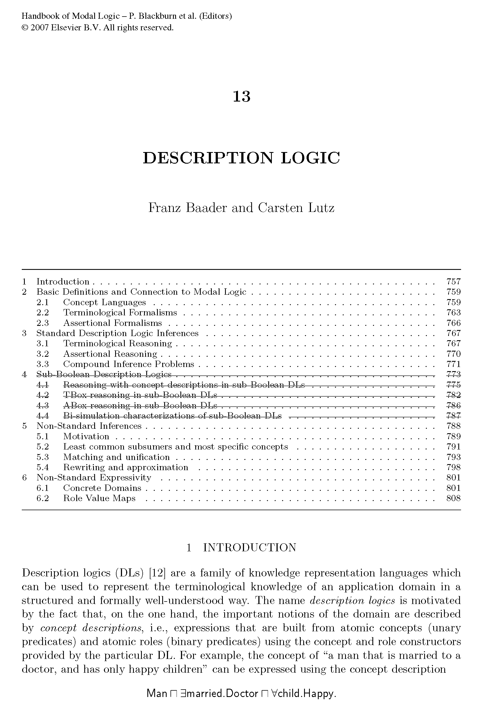

引导
描述逻辑（Description Logics，简称DLs）是一族知识表示（knowledge representation）语言，用来以结构化和易读的方式表示知识。
描述逻辑通常将知识分为两个部分：一个称为TBox（Terminological Box）的术语部分，以及一个称为ABox（Assertional Box）的断言部分。TBox和ABox的组合被称为知识库（Knowledge Base, KB）。TBox表示有关结构的知识，而ABox表示关于具体实例的知识。
知识库的例子
比如说在 TBox 中可以有：教师是一个教授课程的人，学生是一个参加课程的人，以及学生不教授课程。在 ABox中可以有：柏拉图和亚里士多德都是人，逻辑学前沿是一门课，柏拉图教授逻辑学前沿，亚里士多德参加逻辑学前沿。这些可以用一阶逻辑的句子来表示：
用描述逻辑可以表示为：
能从这个知识库中推出亚里士多德是学生，因为亚里士多德是一个参加逻辑前沿课程的人，这个过程可以形式化的完成。
哲学
描述逻辑在这样的知识论前提下进行，将概念区分为抽象类和个体实例，并将名称和意义区分开，由此构建出的具有层次的本体论知识体系。对抽象概念 \(C\) 的认识是通过 \(C\) 的实例抽象出来的，对概念的意义是通过解释 \(\mathcal{I}\) 指向论域中的一些元素实现的。
概念虽然是从实例中定义，但是的确反映出了某种抽象性质（人赋予的，如何客体化出来？用抽象语言描述？），可以用这个性质去约束别的概念。
总览

1. 背景
源自知识表示和语义网的应用。
2. 定义
基本的描述逻辑语言 \(\mathcal{ALC}\) 是正规多模态逻辑 \(\mathcal{K}_{(m)}\) 的变体。描述逻辑的结构分为固定的语言层（例如 \(\mathcal{ALC}\) ）和变动的知识层 \(K = (TBox,ABox)\) 。 \(\mathcal{ALC}\) 通过递归定义， \(K\) 又通过 \(\mathcal{ALC}\) 进行一次简单构造，整体并不是直接通过递归直接定义的。
3. 推理问题
一般的推理任务包括：判断一个对象是否是某个类的实例；判断一个概念是否比另一个概念更具体；检查概念相对于定义的可满足性；检查知识库中概念定义的一致性。还有更困难的推理，比如检查是否有相似的概念造成冗余。
4. 算法复杂性
DLs 推理问题的求解计算极其复杂，以至于不得不在表达能力和计算复杂度之间做出平衡。因为 DLs 系统众多，并且复杂度问题并不是逻辑主要关注的，因此我将只介绍基本的复杂度结论。
Other
复杂度问题多在理论计算机领域被研究，因为描述逻辑在计算机科学里涉及具体的应用，是否存在合理的运行时间直接决定是否能够应用，因此算法问题被看作重要的一部分。
5. 非标准系统
能在模态逻辑找到对应的称为标准部分，非标准的就是没有直接对应的。
6. 当代进展
传统路线的新进展，新的方向。